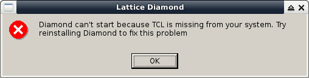
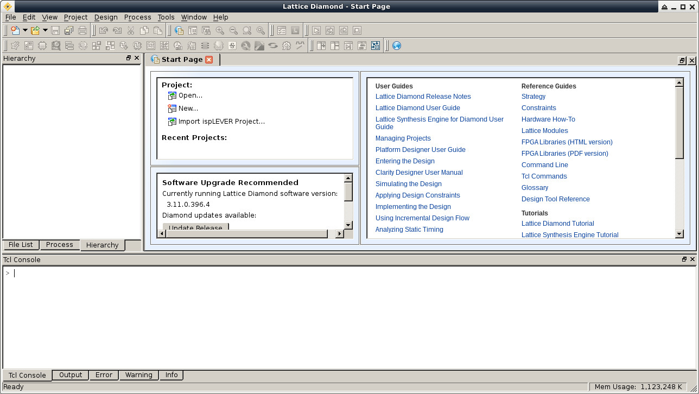

Lattice MXO2-4000HC
安裝Diamond
參考資訊：
1. step-mxo2
步驟如下：
1. 下載Diamond
2. 申請試用License
3. 執行如下命令
$ sudo apt-get install alience -y $ sudo alien diamond_3_11-base_x64-396-4-x86_64-linux.rpm $ sudo dpkg -i diamond-3-11-base-x64_3.11-397_amd64.deb $ cd /usr/local/diamond/3.11_x64/bin $ sudo tar xvf bin.tar.gz
4. 把License.dat放到/usr/local/diamond/3.11_x64/license
5. 執行Diamond
$ /usr/local/diamond/3.11_x64/bin/lin64/diamond /usr/local/diamond/3.11_x64/bin/lin64/diamond_env: line 28: cd: /usr/local/diamond/3.11_x64/bin/lin64/../../tcltk/lib/tcl8.5: No such file or directory

$ cd /usr/local/diamond/3.11_x64/tcltk $ sudo tar xvf tcltk.tar.gz $ cd $ /usr/local/diamond/3.11_x64/bin/lin64/diamond

P.S. /usr/local/diamond/3.11_x64底下資料夾裡面的檔案有可能被壓縮(*.tar.gz)，因此，建議進去看一下並解壓縮，不過目前Diamond僅支援Redhat系統，強制安裝在Debian系統上時，Programmer會無法正常運作(訊息：WARNING - Drivers were not detected. Install the Lattice VM Drivers to access the JTAG chain.)。